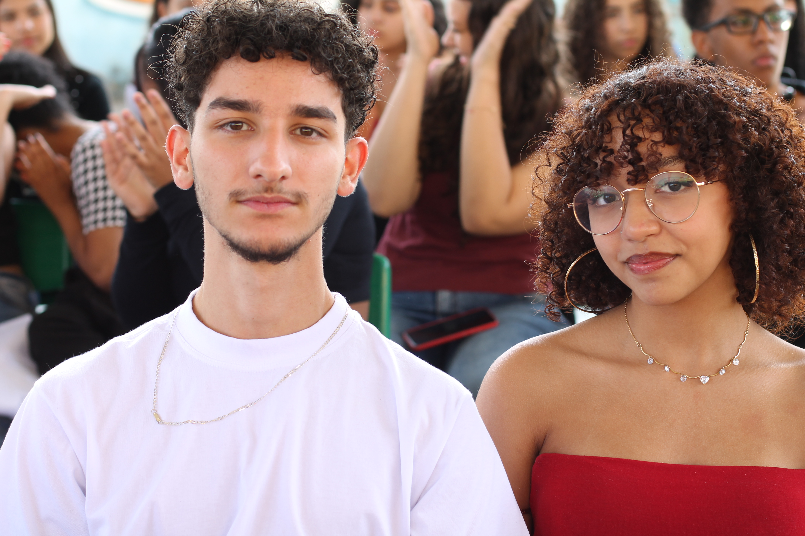

Essa história vai relatar a vida de bonato
Ele vai ao primeiro dia de aula em sua escola, porém ele é desastrado
Ele fica triste e decide chegar atrasado na escola

Ele tropeça em alessandra e derruba seus livros no chão
Fim!!
Ele triste vai á sua sala
Vai ao médico todo machucado
Os dois começam a conversar e bonato percebe que seja uma boa opção ser amigo de alessandra
Bonato conhece alessandra que fica preocupada com o que aconteceu com ele
No açai os dois conversam, desabafa, e criam sentimentos um pelo outro
Bonato a chama para ir pra sua casa e ela feliz aceita
Alessandra descobre que bonato namorava e o bloqueia de todas as redes sociais.
Alessandra fala que vai embora, porém bonato não a deixa ir sem antes...